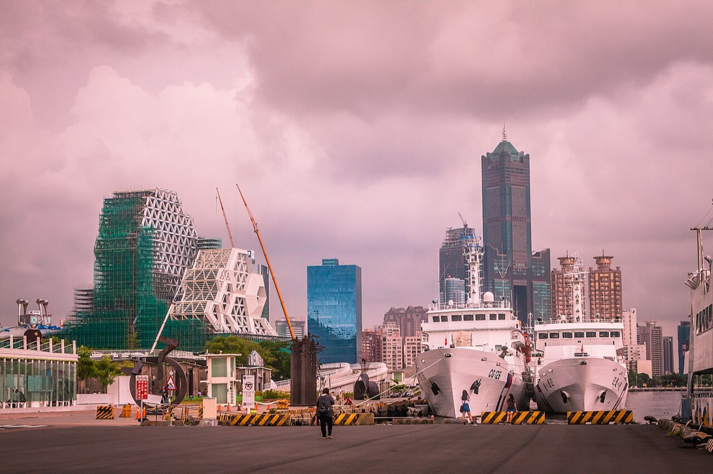
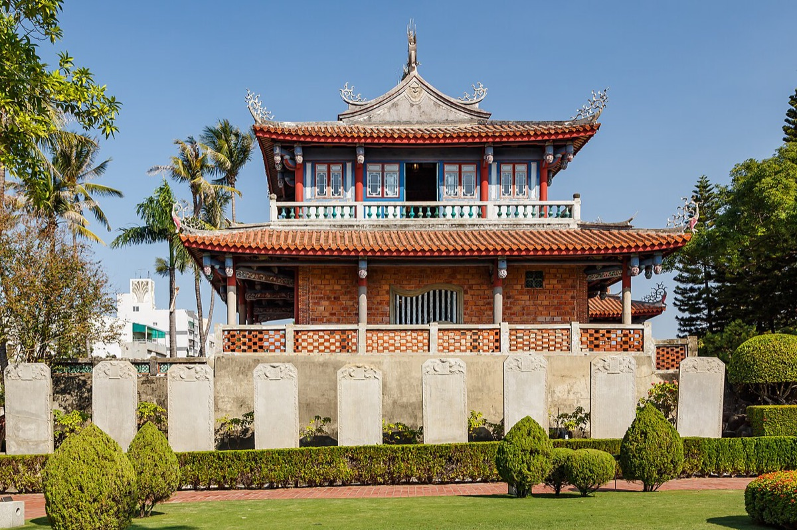

타이난 · 2박
DAY 4~6 · 대만에서 가장 오래된 도시
줘잉
가오슝 · 5박
DAY 1~3, 7~8 · 항구와 야시장
치진섬
불광사 불타기념관
DAY 6 · 줘잉에서 버스 40분
✈ 가오슝 국제공항
기차 1시간
E02 버스 40분
페리
TAIWAN STRAIT
中央山脈
여행 전체 동선 · 가오슝에 다섯 밤, 가운데 사흘만 타이난으로 올라갔다 내려온다
Day 1 · 바다 건너 남쪽으로 12월 10일 (수)
오후 비행기로 대만 남쪽 끝에 내린다. 공항에서 MRT로 20분이면 시내, 첫 끼는 루러우판.
공항버스 09:23 13:25 이륙 ✈ 가오슝 도착 15:55 17:00 MRT 시내 레전드 체크인 17:40 저녁 후덕복 유바이크 산책 밤
Day 1의 하루 곡선 · 반나절을 이동에 쓰고 밤에 도착한다
FLIGHT
티웨이 인천 → 가오슝13:25 출발 · 15:55 도착
STAY
레전드 호텔 3박MRT 치엔진(cianjin)역 · 15.5만
오늘의 미션
루러우판으로 시작난청루러우판과 후덕복, 둘 다 도전
공항 → 시내 이동
가오슝 국제공항 MRT 치엔진역 레전드 호텔 🚇 MRT 레드라인 🚇 약 20분 🚶 도보 입국심사 끝나면 바로 지하로. 이지카드로 태그
타임라인
시간 일정 메모
09:23 광교 → 인천공항 1터미널 1시간 공항버스. 10:23 도착. 11:30 출국심사 13:25 티웨이 인천 → 가오슝 ✈ 2시간 30분 15:55 도착. 16:10 가오슝 입국심사 입국신고서는 온라인으로 미리 (twac.immigration.gov.tw). 유심/이심도 미리 등록.17:00 MRT로 시내 20분 치엔진(cianjin)역 하차. 이지카드 충전해두기. 17:40 레전드 호텔 체크인 3박. 치엔진역에서 가깝다. 저녁 후덕복 · 난청루러우판 식사 대만 첫 끼는 루러우판. 두 집이 가까워 둘 다 도전 가능. 밤 유바이크로 동네 한 바퀴 자전거 앱을 미리 깔고 이지카드를 연결해두면 바로 빌릴 수 있다. 가오슝은 자전거 길이 잘 돼 있다.
DAY 1 체크포인트
이번 여행의 발은 유바이크입니다. 가오슝은 평지에 자전거 도로가 잘 깔려 있어 MRT보다 유바이크가 빠른 구간이 많아요. 앱 설치와 이지카드 연결을 첫날 끝내두면 남은 일주일이 편합니다.입국신고서는 온라인으로 미리 넣어두면 줄을 한 번 덜 섭니다.이지카드는 MRT, 페리, 유바이크, 편의점까지 다 됩니다. 첫날 넉넉히 충전하세요.
12월 가오슝은 한국 가을 날씨입니다. 낮에는 반팔로 충분하고 밤에 얇은 겉옷 하나.
Day 2 · 강과 창고와 야시장 12월 11일 (목)
아침은 흥륭거, 낮에는 옛 항구 창고를 고친 보얼에서 시간을 보내고, 해가 지면 아이허 유람선과 리우허 야시장.
흥륭거 아침 점심 우육탕면 보얼 예술특구 오후 해질녘 아이허 유람선 리우허 야시장 저녁 밤 오락실
Day 2의 하루 곡선 · 낮은 예술특구, 밤은 강과 야시장
MOVE
유바이크와 MRT평지라 자전거가 빠르다
EAT
우육탕면 · 야시장 순례소시지, 메론, 버블티, 오징어, 항아리빵
오늘의 미션
아이허 유람선티웨이 항공권을 보여주면 할인
타임라인
시간 일정 메모
아침 흥륭거 식사 현지식 아침. 이 여행에서 두 번 간다. 점심 우육탕면 식사 牛忘了呼吸 극품우육면. 진한 국물의 소고기면. 오후 보얼 예술특구 명소 유바이크로 이동. 옛 항구 창고를 통째로 고쳐 만든 복합문화공간. 컨테이너와 설치미술, 상점이 섞여 있다. 해질녘 아이허강 유람선 오늘의 미션 티웨이 항공권을 보여주면 입장 할인 . 해 지는 시간에 맞춰 타면 도시 야경이 켜지는 걸 물 위에서 본다.저녁 리우허 야시장 식사 17:00~04:00. 소시지, 메론, 버블티, 구운 오징어, 레몬그린티, 항아리빵. 미려도역에서 바로 이어진다. 밤 오락실 구경 선택 야시장 주변 게임센터. 전기 자전거로 숙소 복귀.
DAY 2 체크포인트
리우허 야시장은 미려도역에서 바로 이어집니다. 나가는 길에 광지둥정(빛의 돔) 을 꼭 올려다보세요. 세계에서 가장 아름다운 지하철역으로 꼽히는 유리 천장입니다.유람선은 해 지는 시간에 맞추는 게 핵심 입니다. 낮에 타면 그냥 강이고, 해 질 녘에 타면 야경이 켜지는 과정을 물 위에서 봅니다.보얼 예술특구는 넓습니다. 걸어서 다 보려면 지치니 유바이크를 끌고 들어가세요.
야시장은 현금이 편합니다. 카드 안 받는 노점이 많아요.
Day 3 · 옛 항구와 섬 12월 12일 (금)
가오슝이 시작된 동네 하마센으로 간다. 언덕 위 영국영사관에서 항구를 내려다보고, 페리를 타고 치진섬으로.
딴삥 아침 점심 궈샤오미엔 영국영사관 오후 간식 하이즈빙 치진섬 오후 저녁 이치겐 보얼 야경 밤
Day 3의 하루 곡선 · 언덕과 바다를 오가는 하루
MOVE
MRT + 유바이크 + 페리치엔진 → 하마센 → 치진섬
EAT
궈샤오미엔 · 하이즈빙 · 이치겐빙수 한 그릇은 꼭
오늘의 미션
치진섬 건너가기페리로 10분, 18시까지
하마센과 치진섬
치엔진역 하마센 페리 선착장 치진섬 🚇 MRT 🚲 유바이크 ⛴ 페리 10분 언덕 위 영사관을 보고 내려와 그대로 배를 탄다
타임라인
시간 일정 메모
아침 딴삥과 누가크래커 식사 라오지앙 홍차 뉴나이(老江紅茶牛奶). 대만식 아침과 홍차 밀크티. 점심 궈샤오미엔 식사 새우탕면과 우육면, 오이. 10:30~20:00. 왼쪽에서 주문·계산하고 오른쪽에서 먹는 구조라 줄을 두 번 선다. 이동 치엔진 → 하마센 MRT 하마센은 일제강점기에 매립으로 만든 가오슝의 시작점. 오후 다카오 영국영사관 오늘의 미션 유바이크로 이동. 1865년에 문을 연 영사관으로, 언덕 위 관저에서 가오슝항이 한눈에 보인다. 간식 하이즈빙 디저트 빙수. 12월에도 빙수가 맛있는 게 남대만이다. 오후 치진섬 명소 페리로 건넌다. 08:00~18:00. Ecological District(red) 역에서 내려 R35번 버스를 타는 경로도 있다. 저녁 이치겐 식사 밤 보얼 예술특구 야경 선택 밤에 한 번 더. 조명이 켜진 창고 거리는 낮과 다르다. 유바이크로 숙소 복귀.
DAY 3 체크포인트
하마센(哈瑪星)이라는 이름 자체가 일본어입니다. 하마센(浜線), 곧 해안선 철도에서 온 말이고 일제강점기 매립으로 생긴 땅입니다. 가오슝이라는 도시가 여기서 시작됐어요.영국영사관은 관저와 영사관이 언덕 위아래로 나뉘어 있습니다. 계단을 올라야 하니 신발을 편하게.치진섬은 18시까지 입니다. 페리 막차 시간을 미리 확인하고 들어가세요.영사관 입장료와 페리 요금은 현금이나 이지카드로 해결됩니다.
Day 4 · 가장 오래된 도시로 12월 13일 (토)
기차로 한 시간 올라가면 타이난. 대만에서 가장 오래된 도시이자 소식(小吃)의 본고장이다.
흥륭거 아침 오전 타이난행 기차 도소월 본점 점심 오후 하야시 백화점 Lily 과일빙수 간식 오후 적감루 땅콩비빔면 저녁 밤 션농지에
Day 4의 하루 곡선 · 오전에 올라가 오후를 통째로 구시가에 쓴다
MOVE
가오슝역 → 타이난역기차 1시간 · NT$316
STAY
Ying Dai Hotel타이난 시내 · 역에서 15분
오늘의 미션
도소월 담자면1895년 창업, 담자면이 시작된 집
가오슝 → 타이난
가오슝역 타이난역 숙소 구시가 🚆 기차 1시간 🚶 15분 🚶 도보권 NT$316. 타이난 구시가는 걸어서 다 닿는다
타임라인
시간 일정 메모
아침 흥륭거 식사 가오슝 마지막 아침. 오전 가오슝역 → 타이난역 1시간 기차 NT$316. 오전 숙소로 이동 15분 Ying Dai Hotel. 점심 도소월 본점 오늘의 미션 度小月. 1895년 창업. 담자면이 태어난 집 이고 지금 4대째다. 오후 하야시 백화점 명소 1932년에 문을 연 타이완 최초의 백화점 중 하나. 옛 엘리베이터와 옥상 신사가 남아 있다. 간식 Lily 과일빙수 디저트 타이난 과일빙수의 간판. 오후 블루프린트 문화창의공원 선택 옛 관사 터를 고친 문화공간. 오후 션농지에 명소 神農街. 청대 상업 거리가 그대로 남은 골목. 소품샵과 바가 섞여 있다. 오후 적감루 오늘의 미션 赤崁樓. 1653년 네덜란드 동인도회사가 세운 프로빈시아 요새 자리. 저녁 땅콩비빔면 식사 티멘조인의 마장면.
DAY 4 체크포인트
타이난은 걸어서 보는 도시입니다. 구시가의 적감루, 션농지에, 하야시 백화점이 다 도보권이라 교통편을 거의 안 씁니다.도소월이라는 이름은 "작은 달을 넘긴다"는 뜻 입니다. 태풍철인 7~8월에 고기를 못 잡는 비수기를 소월이라 불렀고, 그 시기를 넘기려 어부가 팔기 시작한 국수가 담자면입니다.소식(小吃) 문화의 본고장 이라 한 끼를 크게 먹기보다 조금씩 여러 번 먹는 쪽이 맞습니다.션농지에는 해가 지면 분위기가 완전히 달라집니다. 낮에 한 번 보고 밤에 다시 지나가세요.
Day 5 · 네덜란드가 쌓은 요새 12월 14일 (일)
타이난의 시작인 안핑으로. 400년 전 네덜란드 동인도회사가 쌓은 요새와 나무가 집을 삼킨 창고를 본다.
쓰차오 녹색터널 오전 오전 안핑 트리하우스 윈창 비프스프 점심 오후 안평고성 숙소 체크인 오후 저녁 Wild BBQ 화원 야시장 밤
Day 5의 하루 곡선 · 오전 안핑, 저녁은 바비큐와 야시장
오늘의 미션
안평고성과 트리하우스1624년 질란디아 요새 자리
타임라인
시간 일정 메모
오전 쓰차오 녹색터널 명소 四草綠色隧道. 맹그로브가 수로 위로 아치를 이룬 구간을 작은 배로 지난다. 대만의 아마존이라 불린다. 오전 안핑 트리하우스 & 덕양기행 오늘의 미션 옛 영국 상사의 소금 창고를 반얀나무가 통째로 삼킨 곳. 뿌리가 벽과 천장을 뚫고 자랐다. 점심 윈창 비프스프 식사 win chang beef soup anping. 갓 잡은 소고기를 뜨거운 국물에 익혀 먹는 타이난식 우육탕. 오후 안평고성 오늘의 미션 安平古堡. 1624년 네덜란드가 쌓은 질란디아 요새 자리. 1661년 정성공이 네덜란드를 몰아내고 고향 이름을 따 안핑으로 바꿨다. 오후 숙소 체크인 및 휴식 호텔 브라운 치칸 브랜치. 저녁 Wild BBQ 식사 이번 여행에서 가장 큰 한 끼. 밤 화원 야시장 간식 타이난 최대 야시장. 파파야 밀크주스와 스윗포테이토볼. 목·토·일만 열리니 요일 확인 .
DAY 5 체크포인트
화원 야시장은 매일 열리지 않습니다. 목·토·일에만 서니 일정을 거기에 맞춰야 합니다. 오늘이 일요일이라 운이 좋습니다.안평고성은 대만 역사의 출발점 입니다. 네덜란드가 1624년에 쌓고, 1661년 정성공이 빼앗았고, 지금 남은 흰 탑은 일제강점기에 세운 것입니다. 성벽 벽돌만 400년 된 원본이에요.쓰차오 녹색터널은 배 시간이 정해져 있습니다. 오전에 먼저 가는 게 안전하고, 주말에는 대기가 깁니다.안핑은 구시가에서 떨어져 있어 오전을 통째로 쓰는 게 낫습니다.
Day 6 · 큰 불상 앞에서 12월 15일 (월)
타이난을 정리하고 가오슝으로 내려온다. 줘잉에 짐을 맡기고 버스로 40분, 산자락의 거대한 불교 단지로.
아일랜드 오브 마인 점심 오후 줘잉역 짐 보관 불타기념관 오후 오후 쇼핑 딘타이펑 저녁 밤 줘잉 숙소
Day 6의 하루 곡선 · 도시를 떠나 산으로, 다시 도시로
MOVE
타이난 → 줘잉 → 불광사기차 + E02 버스 40분
오늘의 미션
불타기념관입장 무료, 2시간은 잡을 것
타이난 → 불광사
타이난 줘잉역 E02 버스 불타기념관 🚆 기차 🚌 1번 출구 3번 정류장 🚌 약 40분 짐은 줘잉역 코인로커에. 버스는 이지카드로 탄다
타임라인
시간 일정 메모
점심 아일랜드 오브 마인 식사 island of mine. 타이난 수제버거. 오후 타이난 → 줘잉역, 짐 맡기기 기차 줘잉역 코인로커 이용. 오후 E02 버스로 불광사 약 40분 줘잉역 1번 출구로 나와 3번 정류장 에서 E02를 타고 종점까지. 이지카드 사용 가능.오후 불타기념관 오늘의 미션 佛陀紀念館. 입장 무료 , 2시간은 잡아야 한다. 2003년에 짓기 시작해 2011년에 문을 열었고, 아시아에서 가장 큰 좌불이 앉아 있다. 오후 쇼핑 선물 가오슝으로 돌아와 H&M 등. 저녁 딘타이펑 식사 鼎泰豐. 밤 줘잉 숙소 고속철 줘잉역에서 도보 5분. 체크인 전에 신분증을 미리 보내야 하는 곳이라 확인 필요.
DAY 6 체크포인트
불타기념관은 무료인데 규모가 큽니다. 부지가 100헥타르를 넘고 본관에서 대불까지 걷는 참배 길만 수백 미터라, 2시간은 잡아야 제대로 봅니다.불광사는 1967년 성운대사가 세운 절 이고, 불타기념관은 그보다 한참 뒤인 2011년에 완공됐습니다. 전통 사찰이 아니라 현대에 지은 거대한 종교 단지라 분위기가 다릅니다.버스 막차 시간을 미리 확인하세요. E02는 배차가 촘촘하지 않아 놓치면 애매해집니다.오늘은 짐을 끌고 도시를 옮기는 날입니다. 줘잉역 코인로커를 쓰면 손이 자유로워집니다.
Day 7 · 다시 가오슝 12월 16일 (화)
돌아온 가오슝에서 못 먹은 걸 먹는 날. 사천요리로 한 끼, 테판야끼로 한 끼, 그리고 리우허 야시장 재방문.
카이판 사천요리 점심 간식 다원공 빙수 유바이크 산책 오후 저녁 다이포 테판야끼 리우허 야시장 밤
Day 7의 하루 곡선 · 남은 입맛을 정리하는 하루
EAT
사천요리 · 테판야끼 · 망고빙수먹으러 돌아온 날
타임라인
시간 일정 메모
점심 카이판 식사 사천요리. 간식 다원공 빙수 디저트 망고빙수. 이 집은 내일 한 번 더 간다. 오후 유바이크로 시내 산책 자전거 아이허 강변을 따라 달리기 좋다. 저녁 다이포 테판야끼 식사 눈앞 철판에서 구워주는 코스. 밤 리우허 야시장 간식 두 번째 방문. 레몬그린티, 고구마볼, 지파이. 밤 Inn hotel 마지막 밤.
DAY 7 체크포인트
이 날 일정은 가계부 기록으로 복원했습니다. 원본 시트에는 "가오슝"이라고만 적혀 있어, 결제 순서를 따라 재구성한 것이라 실제 순서와 다를 수 있습니다.다원공 빙수는 이틀 연속 갔습니다. 첫날은 망고, 둘째 날은 과일 추가. 그만큼 괜찮았다는 뜻으로 읽힙니다.리우허 야시장은 04시까지 엽니다. 늦게 가도 됩니다.
Day 8 · 마지막 국수와 선물 12월 17일 (수)
오후 비행기라 오전이 통째로 남는다. 국수 한 그릇 먹고 마트에서 선물을 쓸어 담은 뒤 공항으로.
미엔파워 궈샤오미엔 점심 오후 까르푸·마트 쇼핑 다원공 빙수 간식 선물 누가크래커 이륙 ✈ 17:00 20:45 인천 도착
Day 8의 하루 곡선 · 짧게 먹고 사서 떠난다
FLIGHT
티웨이 가오슝 → 인천17:00 출발 · 20:45 도착
오늘의 미션
선물 쓸어 담기누가크래커와 마트 털기
시내 → 공항
시내 공항버스 가오슝 국제공항 인천 🚌 공항버스 ✈ 17:00 출발 ✈ 2시간 45분 20:45 인천 도착. 공항버스로 귀가
타임라인
시간 일정 메모
점심 미엔파워 궈샤오미엔 식사 마지막 국수 한 그릇. 오후 까르푸와 마트 쇼핑 선물 Showba 24시 마트. 라면, 과자, 차 종류를 여기서 몰아 산다. 간식 다원공 빙수 디저트 과일빙수에 과일 추가. 이틀 연속. 선물 라오지앙 누가크래커 선물 대만 선물의 정석. 3일차에 아침 먹었던 그 집. 오후 공항버스로 가오슝 국제공항 이동 면세점에서 마지막 쇼핑. 17:00 티웨이 가오슝 → 인천 ✈ 2시간 45분 20:45 인천 도착.
DAY 8 체크포인트
이 날도 가계부 기록으로 복원했습니다. 원본 시트에는 "까르푸 쇼핑"이라고만 적혀 있습니다.선물은 마지막 날에 몰아 사는 구조 였습니다. 누가크래커와 마트 물건은 부피가 크니 캐리어 공간을 미리 비워두는 게 좋습니다.오후 5시 비행이라 오전이 통째로 남습니다. 짐은 숙소나 공항에 맡기고 가볍게 움직이세요.
전체 컨셉
대만 남부만 보는 일정이다. 타이베이를 건너뛰고 가오슝에 베이스를 두되, 가운데 사흘만 타이난으로 올라갔다 내려온다. 가오슝 다섯 밤, 타이난 두 밤.
이 일정의 뼈대
가오슝을 베이스로 둔 이유 공항이 시내에서 MRT 20분이라 도착과 출발이 모두 가볍다. 숙소를 자주 옮기지 않아도 되고, 타이난은 기차로 한 시간이라 당일치기에 가깝게 다녀올 수 있다.타이난을 가운데 끼운 이유 구시가와 안핑을 제대로 보려면 하루로는 부족하고, 그렇다고 베이스를 옮길 만큼 길지도 않다. 이틀 밤만 자고 다시 내려오는 구성이 맞았다.유바이크 중심 동선 가오슝은 평지에 자전거 도로가 잘 깔려 있다. MRT만 쓰면 역에서 목적지까지 걷는 거리가 길어지는데, 유바이크를 쓰면 그 간극이 사라진다. 가계부에 유바이크 결제가 일곱 번 찍혀 있다.12월에 간 이유 남대만의 12월은 한국의 가을 날씨다. 낮에 반팔로 다닐 수 있으면서 습하지 않아, 걸어 다니기에 일 년 중 가장 좋은 시기다.
가오슝 高雄 개 때리는 동네에서 높은 영웅으로

사진 · Jirka Matousek · CC BY 2.0
미려도역의 광지둥정, 옛 항구 창고를 고쳐 쓴 보얼 예술특구, 아이허의 유람선, 치진의 등대, 그리고 유바이크
가오슝이라는 이름은 백 년이 조금 넘었다. 원래 이 땅의 이름은 마카타오족 말로 대나무 숲을 뜻하는 타카우(Takau)였고, 한자로 음을 빌려 打狗(타고우)라고 적었다. 1603년 문헌에 打狗嶼로 처음 나온다. 문제는 그 한자를 그대로 읽으면 개를 때린다는 뜻이 된다는 것이었다.
알고 가면 보이는 것
1920년에 이름이 바뀌었다 일제강점기 지방제도 개편 때 打狗를 버리고, 발음이 비슷하면서 교토에도 있는 지명인 高雄(다카오)로 고쳤다. 전후에 중국어 발음으로 읽으면서 가오슝이 됐다. 지금도 영국영사관 이름에는 打狗가 그대로 남아 있다.하마센은 일본어 지명이다 哈瑪星은 일본어 하마센(浜線), 곧 해안선 철도에서 온 말이다. 일제강점기에 바다를 메워 만든 땅이고, 여기에 항구와 철도와 시가지가 들어서면서 근대 가오슝이 시작됐다. 지금은 조용한 동네지만 이 도시의 출발점이다.보얼은 2번 부두 창고라는 뜻 駁二에서 駁은 짐을 부린다는 뜻이고 二는 창고 번호다. 일제강점기부터 어분과 설탕, 수출입 화물을 쌓아두던 항구 창고였는데, 2001년에 예술계 사람들이 모여 문화공간으로 바꿨다. 건물을 새로 짓지 않고 창고를 그대로 쓴 덕에 항구 도시의 흔적이 남아 있다.영국영사관이 1865년에 생긴 이유 1858년 톈진조약으로 대만이 개항하면서 1863년 지룽과 타고우 두 항구가 열렸다. 1864년 세관이 서고 그해 11월 부영사관이 남쪽으로 내려와 1865년 영사관으로 승격했다. 지금 보는 언덕 위 건물은 1879년에 완공된 것이다.미려도역의 유리 천장 美麗島站의 광지둥정(光之穹頂)은 이탈리아 작가 나르키소스 콸리아타가 손으로 그린 유리 작품이다. 탄생에서 성장, 영광, 파괴, 그리고 윤회로 이어지는 과정을 담았다고 한다. 세계에서 가장 아름다운 지하철역을 꼽을 때 늘 들어간다.
현장 메모
야시장은 두 번 갔다 리우허 야시장을 2일차와 7일차에 한 번씩 갔다. 미려도역에서 바로 이어져 접근이 쉽고, 17시부터 새벽 4시까지 열어 시간 제약이 거의 없다.유람선은 항공권 할인 아이허강 유람선은 티웨이 항공권을 보여주면 입장권을 할인해줬다.치진섬은 18시까지 페리로 건너가는 섬이라 돌아오는 배 시간이 하루를 좌우한다. 오후에 넘어갈 거면 일찍 움직이는 게 안전하다.
타이난 台南 네덜란드가 세우고 정성공이 빼앗은 도시

사진 · CEphoto, Uwe Aranas · CC BY-SA 3.0
네덜란드가 쌓은 안평고성, 프로빈시아 자리의 적감루, 쓰차오의 녹색터널, 그리고 담자면 한 그릇
타이난은 대만에서 가장 오래된 도시다. 1624년 네덜란드 동인도회사가 안핑에 질란디아 요새를 쌓으면서 시작됐고, 1653년에는 지금 적감루 자리에 프로빈시아 요새를 지었다. 대만의 근대사가 이 두 요새 사이에서 시작됐다.
알고 가면 보이는 것
1661년에 주인이 바뀌었다 명나라 유신 정성공이 네덜란드를 몰아내고 이 땅을 차지했다. 그는 질란디아 요새가 있던 곳을 고향 이름을 따 안핑(安平)으로 바꿨다. 지금 안평고성에서 보는 흰 전망탑은 훨씬 뒤 일제강점기에 세운 것이고, 400년 된 것은 벽돌로 쌓은 성벽 일부뿐이다.적감루는 요새 위에 올린 누각 赤崁樓는 네덜란드가 세운 프로빈시아 요새 터에 청나라 때 중국식 누각을 올린 것이다. 그래서 아래는 서양식 벽돌 기단, 위는 중국식 처마라는 이상한 조합이 됐다. 대만 수험생들이 합격을 빌러 오는 곳이기도 하다.소식(小吃)의 본고장 타이난 음식이 작은 그릇에 조금씩 나오는 데는 이유가 있다. 부성(府城)이라 불리던 행정 중심지라 노점과 간식 문화가 일찍 발달했고, 한 집이 한 가지만 평생 파는 구조가 자리 잡았다. 한 끼를 크게 먹기보다 여러 집을 도는 쪽이 이 도시를 맞게 먹는 법이다.담자면은 비수기의 음식이었다 度小月이라는 상호는 작은 달(小月)을 넘긴다(度)는 뜻이다. 태풍이 부는 7~8월에는 고기를 잡을 수 없었고, 어부들은 그 비수기를 소월이라 불렀다. 1895년 한 어부가 그 시기를 버티려고 국수를 팔기 시작한 것이 담자면이고, 지금 4대째다. 擔仔는 메고 다닌다는 뜻으로, 그릇과 재료는 물론 의자와 탁자까지 지게에 지고 다녔다.나무가 집을 삼킨 창고 안핑 트리하우스는 옛 영국 상사의 소금 창고였다. 버려진 사이 반얀나무가 벽과 천장을 뚫고 자라 건물을 통째로 감쌌고, 그 상태를 그대로 두고 통로만 놓아 공개했다. 복원하지 않기로 한 선택이 이 장소를 만들었다.
현장 메모
화원 야시장은 요일을 탄다 타이난 최대 야시장인데 목·토·일만 연다. 일정을 짤 때 이 요일에 타이난 밤이 걸리도록 맞춰야 한다.구시가는 전부 도보권 적감루, 션농지에, 하야시 백화점이 걸어서 닿는 거리에 몰려 있다. 반면 안핑은 떨어져 있어 오전을 통째로 쓰는 편이 낫다.쓰차오 녹색터널은 배 시간 맹그로브 수로를 작은 배로 지나는데 운항 시간이 정해져 있고 주말에는 대기가 길다. 오전에 먼저 가는 쪽이 안전하다.